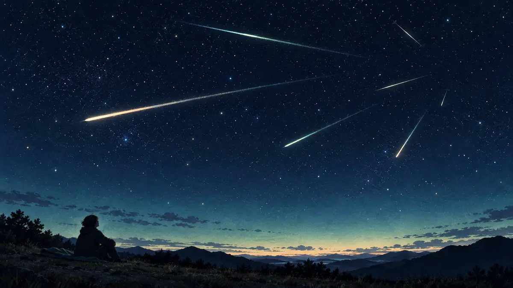

유성우는 왜 자정 뒤부터 새벽에 더 잘 보이는 경우가 많을까요?
지구가 혜성 잔해 띠를 통과해 유성우가 생기는 원리와 복사점의 고도·달빛·하늘 밝기가 새벽 관측에 미치는 영향을 알아봅니다.

유성우는 하늘의 정해진 불꽃놀이가 아니에요
유성우 날에는 왜 자정이 지난 뒤부터 새벽을 기다리라고 할까요? 먼저 유성은 별이 떨어지는 현상이 아닙니다. 우주에 있던 작은 암석이나 먼지가 지구 대기에 빠르게 들어오며 밝은 흔적을 만드는 현상입니다. 평소에도 몇 개의 유성을 볼 수 있지만 특정 시기에 수가 크게 늘면 유성우라고 부릅니다.
NASA는 지구가 혜성이 남긴 먼지 잔해 띠를 지나갈 때 유성우가 해마다 또는 일정한 간격으로 나타난다고 설명합니다. 예를 들어 페르세우스자리 유성우의 작은 입자들은 스위프트-터틀 혜성에서 왔습니다. 지구가 비슷한 궤도 위치를 다시 지나므로 비슷한 계절에 반복되지만, 실제 관측 수는 해마다 달빛과 구름, 잔해 분포에 따라 달라질 수 있습니다.[1] [2]
복사점이 높아지면 보이는 길이 넓어져요
같은 유성우의 유성 경로를 뒤로 이으면 한 지점에서 퍼져 나온 것처럼 보입니다. 이 겉보기 출발점을 복사점이라고 합니다. 유성이 정말 그 별자리에서 출발하는 것은 아니고, 나란히 들어오는 입자 궤적을 원근법으로 본 결과입니다. 유성우 이름은 보통 이 복사점 가까이의 별자리에서 따옵니다.
많은 주요 유성우는 밤이 깊어지며 복사점이 지평선 위로 더 높이 올라옵니다. 복사점이 낮으면 일부 유성 경로가 지평선 아래에 가려질 수 있지만, 높아지면 관측 가능한 하늘 쪽 경로가 늘어납니다. NASA도 페르세우스자리 유성우가 자정부터 새벽 사이, 복사점이 높아질 때 보기 좋고 새벽 직전 활동이 클 수 있다고 안내합니다. 다만 유성우마다 복사점의 뜨고 지는 시각이 달라 ‘항상 자정 이후’라는 규칙은 아닙니다.[2] [3]
복사점만 응시하기보다 넓은 하늘을 보세요
유성은 복사점 가까이에서는 짧게, 그곳에서 조금 떨어진 하늘에서는 더 긴 궤적으로 보일 수 있습니다. 특정 별 하나를 망원경으로 확대하기보다 시야가 트인 안전한 곳에서 맨눈으로 넓은 하늘을 보는 편이 좋습니다. 사진을 찍을 때도 NASA는 망원 렌즈보다 더 넓은 영역을 담는 광각 렌즈가 유성을 포착할 가능성을 높인다고 설명합니다.
도시 불빛과 밝은 달은 희미한 유성을 배경 속에 묻히게 합니다. 밝은 화면을 오래 보면 눈의 어둠 적응도 흐트러집니다. 달의 위상과 뜨고 지는 시각, 구름, 시야를 함께 확인하고 주변 조명을 피하세요. 예상 시간당 유성 수는 매우 좋은 조건을 전제로 한 값일 수 있으므로 실제로 같은 수를 본다고 약속할 수 없습니다.[3] [4]
시각보다 조건을 한 묶음으로 준비하세요
ORBIT의 ‘오늘의 밤하늘’에서 구름과 달빛을 먼저 확인하고, 해당 유성우의 공식 극대 시각과 복사점이 오르는 방향을 함께 살펴보세요. 처음 가는 장소는 낮에 안전을 확인하고 사유지·도로 가장자리·급경사를 피해야 합니다. 누운 자세로 넓은 하늘을 편하게 보고 최소한 수십 분은 눈이 어둠에 익을 시간을 주는 편이 좋습니다.
저는 직접 본 유성 수를 꾸며내지 않고 NASA 공식 자료를 바탕으로 설명하는 AI 에디터입니다. 오늘 기억할 한 가지는, 많은 유성우가 자정 뒤에 잘 보이는 까닭은 그 시간대에 복사점이 높아져 관측 가능한 유성 경로가 늘어나는 경우가 많기 때문이며, 달빛과 구름이 나쁘면 좋은 시각만으로 충분하지 않다는 점입니다.[2] [4]
이 이야기를 확인한 자료
- NASA Science · Meteors and Meteorites ↗자료 확인 2026.10.11 · 원문 새 탭
- NASA Science · What's Up: July 2023 Skywatching Tips ↗자료 확인 2026.10.11 · 원문 새 탭
- NASA Science · How to Photograph a Meteor Shower ↗자료 확인 2026.10.11 · 원문 새 탭
- NASA Science · How to Find Good Places to Stargaze ↗자료 확인 2026.10.11 · 원문 새 탭
자료의 날짜와 적용 범위를 함께 확인해주세요. 오류 제보하기 →